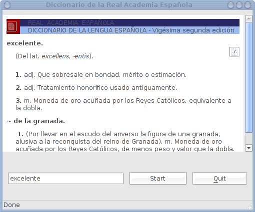

Enter a word to be looked up in the Diccionario de la Real Academia Española, and press Enter or click on "Start". The result is displayed in a GtkHtmlView widget.
The GUI is set up without using Glade in this case, the download is done using the gtk.http_co auxiliary library, which provides asynchronous HTTP access. The lookup handler is as follows:
<%= copy_function("examples/raedic.lua", "start_download") %>